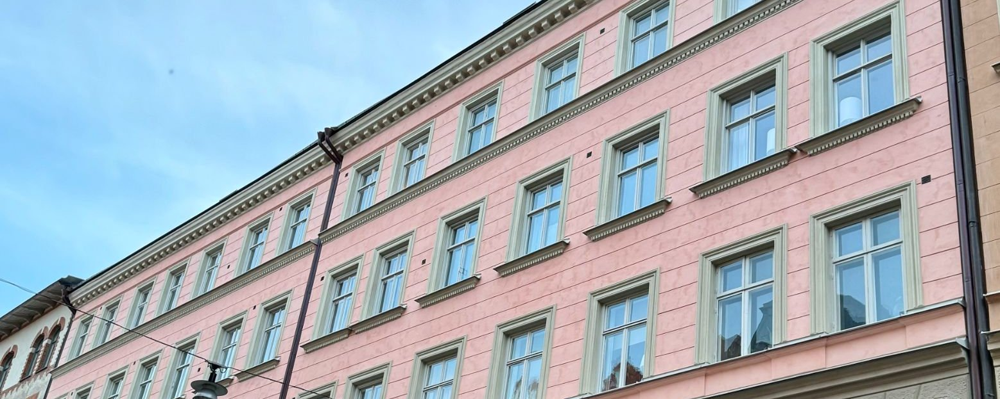

New member? You're welcome in our Facebook group
We recommend that all members join the cooperative's Facebook group Brf Hvilan, where much of the informal communication takes place. Important information from the board is always also provided by email and through notices in the stairwells, in accordance with the statutes.
Working groups – we look after the building together
Property group
Join groupGarden and outdoor group
Join groupRecycling and environment group
Join groupAbout the cooperative
The property at Roslagsgatan 35–37 in Vasastan was built in 1897 and consists of four buildings, facing the street and the courtyard, around a shared courtyard. It contains 55 cooperative apartments and 3 commercial premises. BRF Hvilan is a "genuine" housing cooperative (äkta bostadsrättsförening) that owns its land. The cooperative has carried out several major maintenance projects in recent years; see the renovation history on the For estate agents page and the annual report. The building was designed by the architect Lars Bäckvall and is classified yellow by the Stockholm City Museum (Stadsmuseet), which means it is considered to contribute positively to the cityscape and to have a certain cultural and historical value.
Latest news
-
Light by the lift shows a stoppage in the ground source heat pump
There is now a light next to the lift on the ground floor of the street building at Roslagsgatan 37. If it is on, the ground source heat pump has temporarily stopped – please contact the board immediately. Read more
-
OVK: the ventilation still needs remedial work
The property has failed two OVK inspections in a row. The cooperative has engaged a company that will contact the members concerned, and there are mainly three apartments left where inspections and remedial work have not yet been possible. Read more
-
New internet subscription – each household orders a new router
The cooperative will shortly be changing its internet subscription, and each household will then need to order a new router via My Pages (Mina sidor) at Telia. Read more